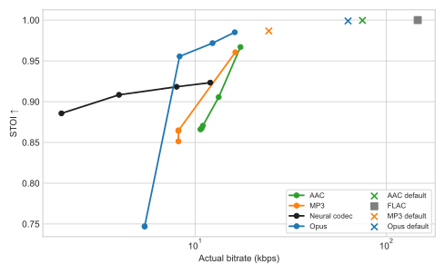
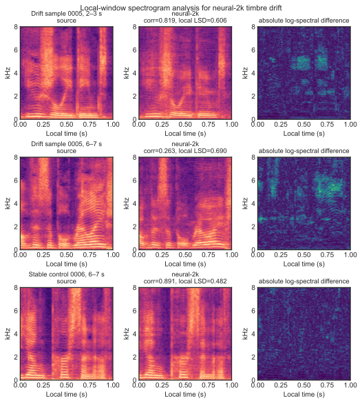

把 16 kHz 单声道波形映射成时间分辨率更低、速率更低的 latent sequence。
把连续 latent 量化成离散码字索引，让表示真正变成可存储、可传输的编码结果。
根据量化后的 token 序列重建波形，恢复高保真的 speech。
r1。x - r1，得到 r2。x - r1 - r2 → r3，依此类推。r1 + r2 + r3 + ...。num_quantizers 就能得到多码率版本。
test-clean，而是从 clean/train.100 切出的项目内 held-out split。
| Codec | 实际 kbps | STOI | LSD | MS-STFT |
|---|---|---|---|---|
| Neural-2k | 2.00 | 0.886 | 10.08 | 1.022 |
| Opus-2k | 5.45 | 0.747 | 27.17 | 2.664 |
| MP3-2k | 8.18 | 0.865 | 37.88 | 3.979 |
| AAC-2k | 10.67 | 0.866 | 33.79 | 3.475 |

